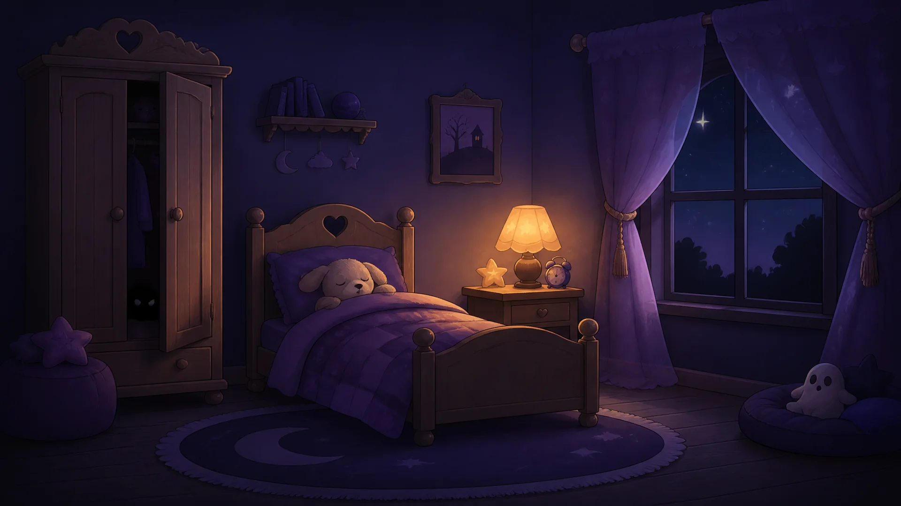

It's dark in the bedroom, and fears are creeping towards the sleepyhead! Move the telescope to look around, and tap a fear to catch it.
👀 Look for little glowing eyes. That's where a fear is hiding!
You have 3 hearts for the whole night.
📱 Tip: turn your phone sideways to see the whole room.
You found 0 fears and kept the sleepyhead safe!
The fears got through. You reached Level 1 and found 0 fears.
You found every fear and kept the sleepyhead safe all night!
0 fears found across all 5 levels